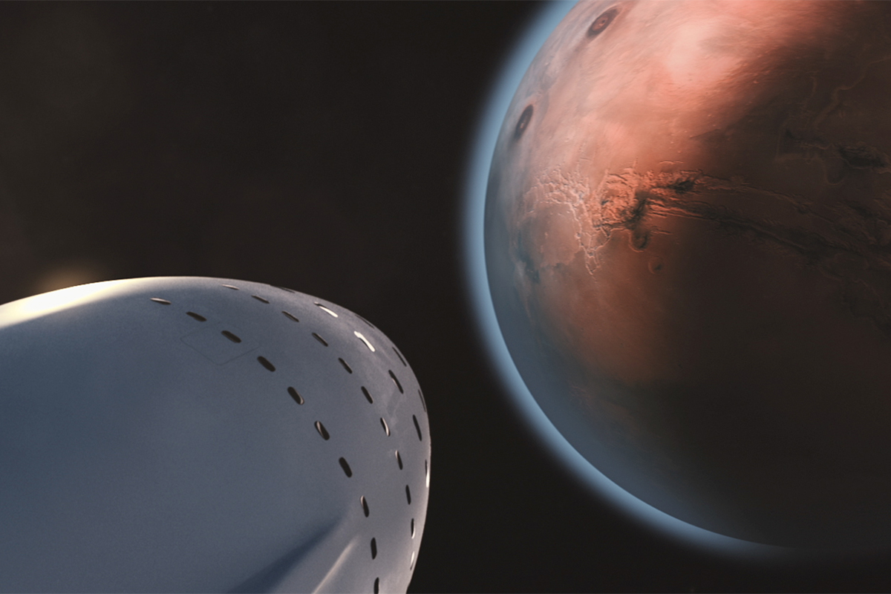

Harmful radiation permeates the cosmos. Our sun and other stars are essentially fusion
reactors that spew
abundant amounts of electromagnetic energy, including X-ray and ultraviolet radiation.
The sun,
as well
as other intensively energetic objects like quasars or the center of galaxies,
also emit high-energy
protons, atomic nuclei and other particles that can cause radiation sickness,
adversely affect a
person’s central nervous system,
increase one’s lifetime risk for cancer and cause degenerative
diseases.
One of the most important attributes a planet needs to support human life is an
atmosphere.
Unfortunately, a very thin one clings to Mars and it’s made up of all the wrong gases.
Water is essential to human life on Mars, but the Red Planet doesn’t contain water — or
does it? Evidence
dating back to the 1970s says otherwise.
When the Mariner 9 and Viking space probes first sent
images of
Mars back to Earth, there were signs of water.
At an average distance of 140 million miles, Mars is one of Earth's closest
habitable neighbors. Mars
is about half again as far from the Sun as Earth is, so it still has decent sunlight.
It is
a little
cold, but we can warm it up. Its atmosphere is primarily CO2 with some nitrogen and argon and a few
other trace elements, which means that we can grow plants on Mars just by compressing the
atmosphere.
Gravity on Mars is about 38% of that of Earth, so you would be able to lift
heavy things
and bound around. Furthermore, the day is remarkably close to that of Earth.
The CEO and founder of SpaceX is working for his Starship spacecraft to reach the
red planet.
As his
plans even aim to establish a city on Mars and in his first statements in this regard,
said in
December 2020.
He calculated that this milestone would be achieved between 2024 and 2026.
Is Elon musk's starship gonna be the ship we use for Mars missions? Follow our newsletter and get updates as soon as we know more!
